Machine Learning at the Belle II Experiment
Thomas Keck (thomas.keck2@kit.edu)
KIT

KIT
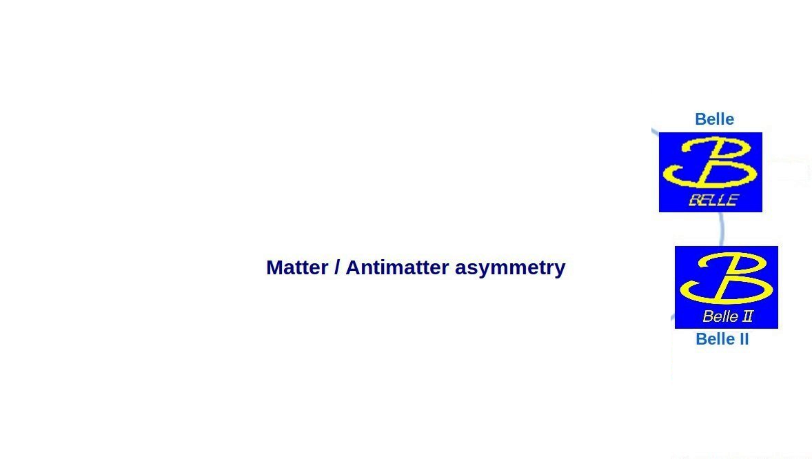
SuperKEKB
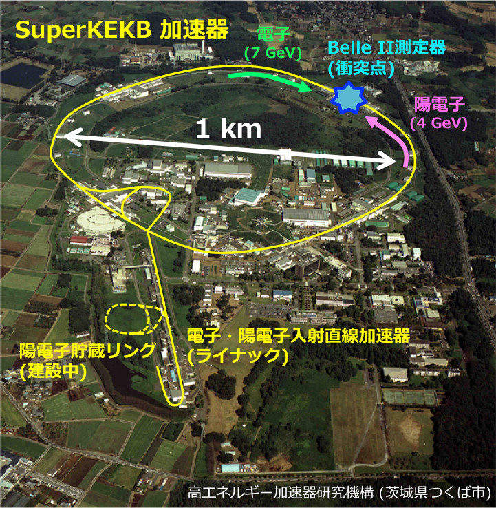
SuperKEKB
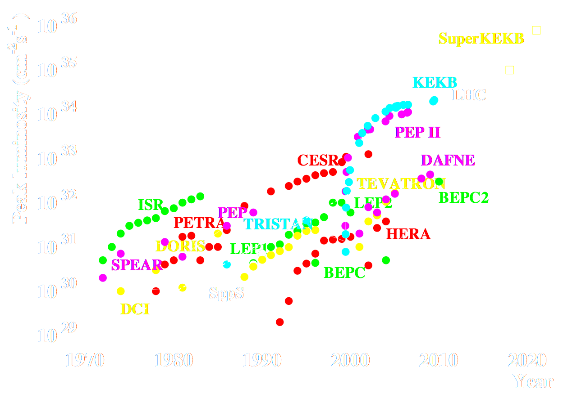
SuperKEKB / Belle II
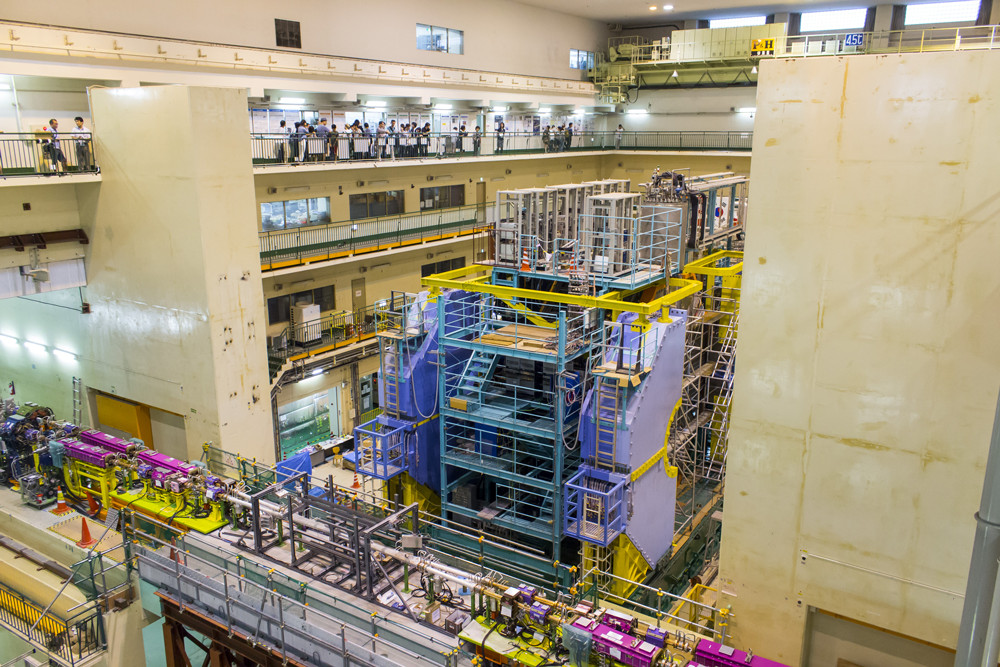
Belle II
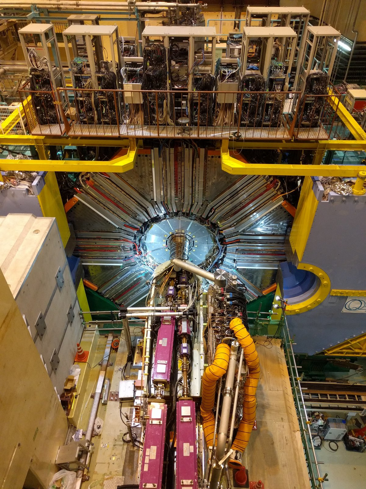
Belle II
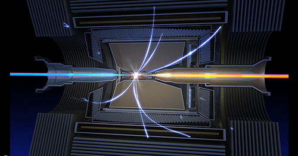
Belle II
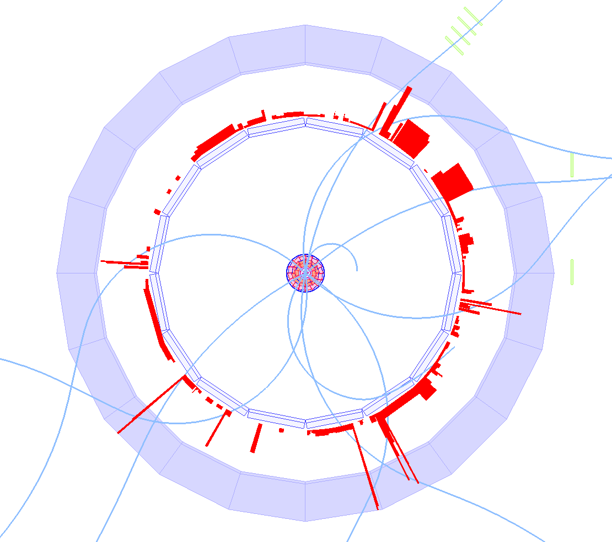
$$ \Upsilon(\mathrm{4S}) \rightarrow \mathrm{B} \bar{\mathrm{B}} $$
B Meson Decays
Full Event Interpretation
Idea
Each event contains exactly two B Mesons
$$ \Upsilon(\mathrm{4S}) \rightarrow \mathrm{B} \bar{\mathrm{B}} $$
Idea
Automatically reconstruct one out of the two B Mesons
$$ \mathrm{B}^- \rightarrow \mathrm{D^{0\star}} \mathrm{D}^- \mathrm{K}^0_\mathrm{s} \rightarrow \dots \rightarrow 2 \mathrm{K}\ 7 \pi\ 4 \gamma$$
Over 10000 possible chains are considered!
Idea
Rest of Event is another B meson!
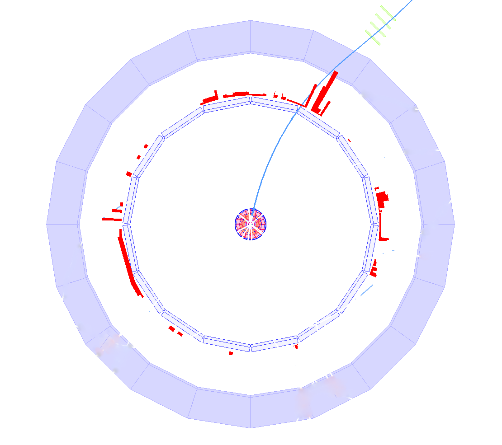
$$ \mathrm{B}^+ \rightarrow \tau^+ \nu \rightarrow \mu^+ \nu \nu \nu $$
Rare decay, only accessible at a B factory!
Hierarchical Reconstruction
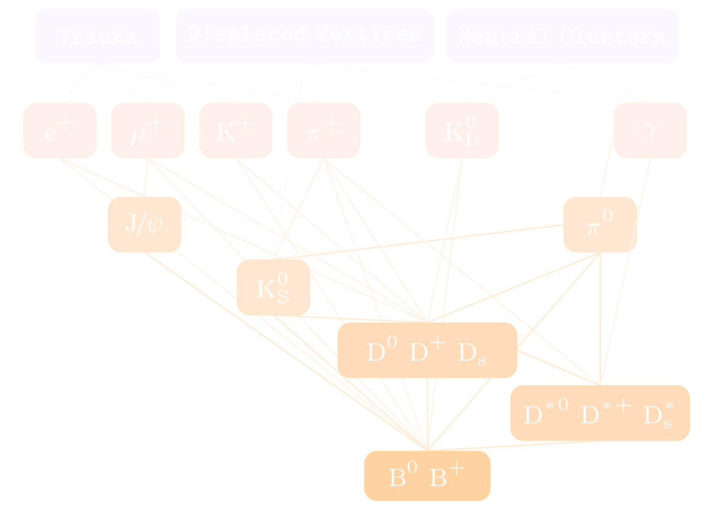
One BDT for each decay-channel $\rightarrow$ Currently $177$ BDTs
Example: $\mathrm{D}^0$
25 decay-channels are considered
- $\mathrm{D}^0 \rightarrow \mathrm{K}^- \pi^+$
- $\mathrm{D}^0 \rightarrow \mathrm{K}^- \pi^+ \pi^0$
- $\mathrm{D}^0 \rightarrow \pi^- \pi^+ \pi^0$
- $\mathrm{D}^0 \rightarrow \mathrm{K}_s^0 \pi^+ \pi^- \pi^0$
- $\mathrm{D}^0 \rightarrow \mathrm{K}^- \mathrm{K}^+ \mathrm{K}_s^0$
- $\dots$
Uses 35 local features
- kinematics in rest-frame of $\mathrm{D}^0$
- positions with respect to $\mathrm{D}^0$
- resonance substructure
- signal probability of the daughters
- decay-channels of the daughters
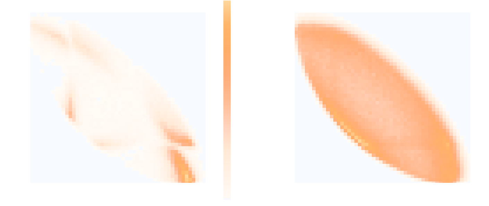
Simple Analogy: Image Recognition
Transform from pixel to object spaceSimple Analogy: Image Recognition
Transform from detector-data to decay-chain space- Probability 0.8
Tracks (1, 4, 6, 8, 10)
Clusters (3, 5, 10, 12, 16) $$ \mathrm{B}^- \rightarrow \mathrm{D^{0\star}} \mathrm{D}^- \mathrm{K}^0_\mathrm{s} \rightarrow \dots $$ - Probability 0.6
Tracks (2, 4, 7, 8, 10, 11)
Clusters (4, 5, 6, 12, 15) $$ \mathrm{B}^- \rightarrow \mathrm{D^0} \pi^+ \pi^- \pi^- \rightarrow \dots $$ - Probability 0.1
Tracks (1, 9, 11)
Clusters (2, 3, 6, 12, 14) $$ \mathrm{B}^- \rightarrow \mathrm{J}/\psi \mathrm{K}^- \pi^0 \rightarrow \dots $$ - $\dots$
Result
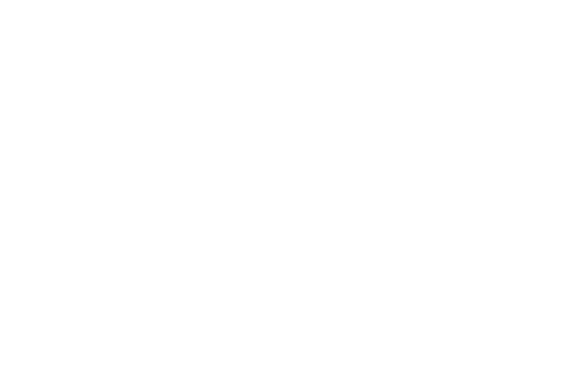
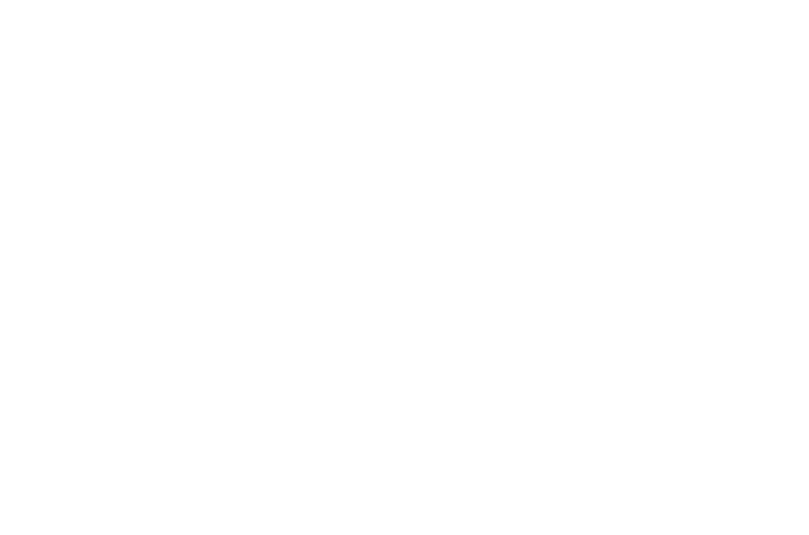
Runtime: FastBDT
Fitting
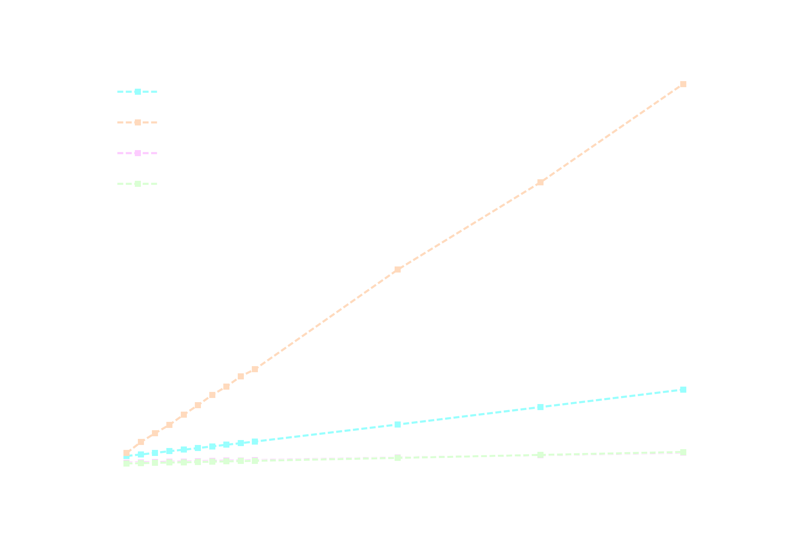
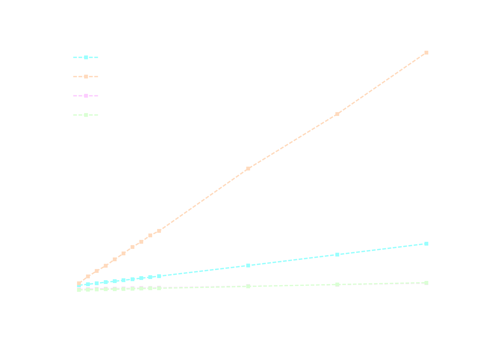
Inference
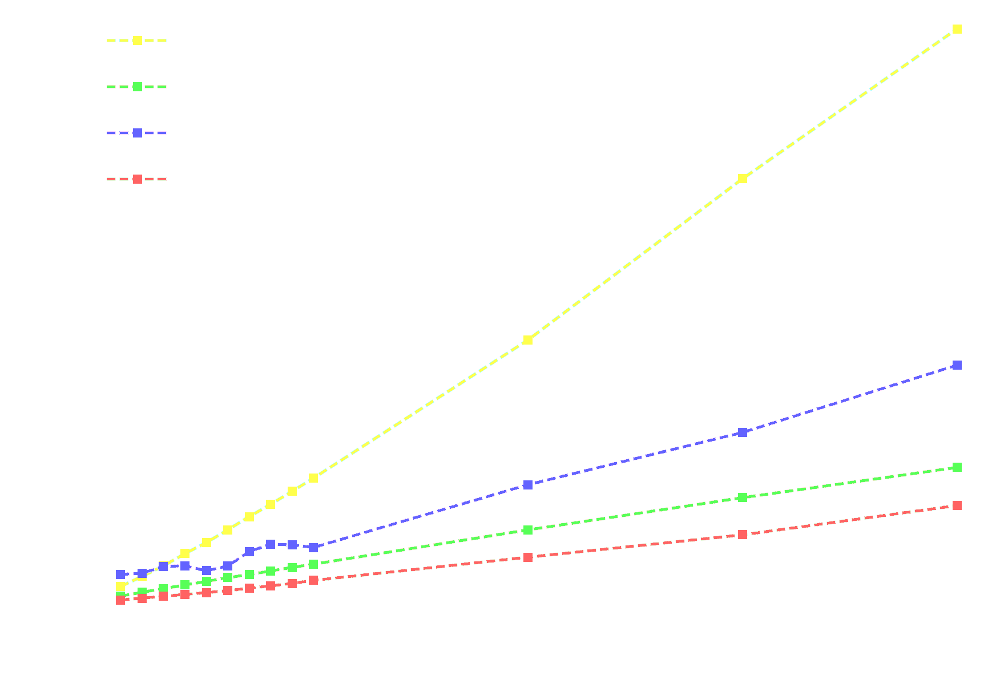
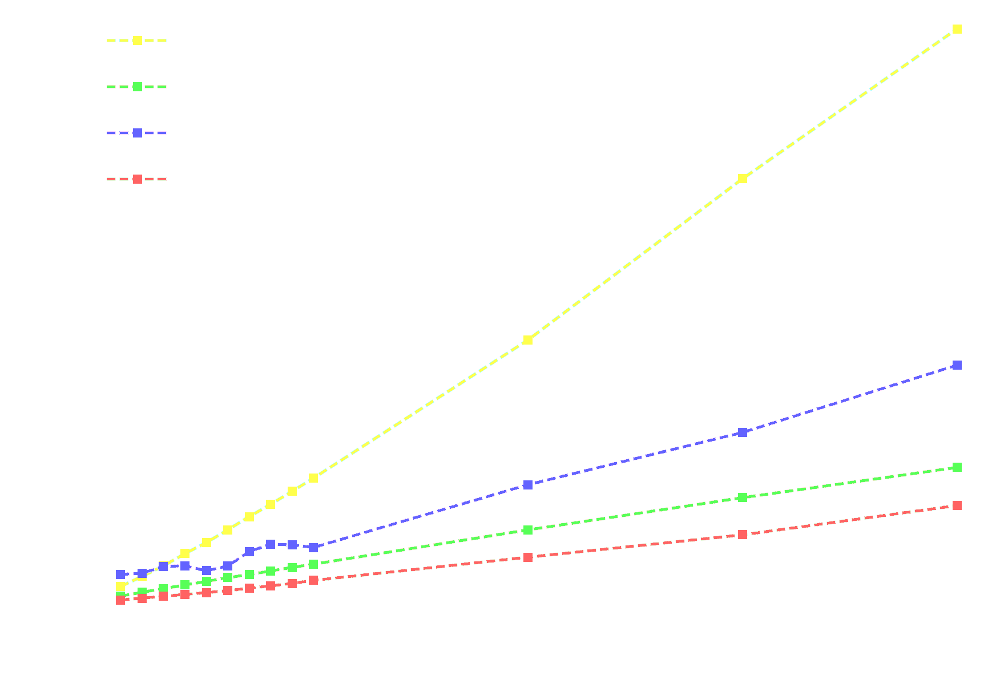
Custom BDT implementation is (originally) one order of magnitude faster
$\rightarrow$ efficient caching and equal-frequency binning
Flavour Tagging
CP Violation
Tradidtional Flavour Tagger

Deep Flavour Tagger

Deep Learning in HEP
3 key technologies
required to use Deep Learning in physics
H-parameter Optimization
How-to optimize the large amount of new h-parameters

H-parameter Optimization
Traditional GridSearch


Bayesian Optimization


Equivalent performance in fewer iterations
Data Driven Algorithms
How-to reduce the dependency on simulated events


- Train classifier: recorded vs. simulated events
- Reweight simulated events: $ w = \frac{p}{1-p} $
- Train classifier: signal vs. background events
Uniformity Constraints
How-to prevent the usage of certain information
Example: We want to measure the resonance substructure and increase signal-to-noise ration using a BDT
Resonance Substructure


Feature Correlation Matrix
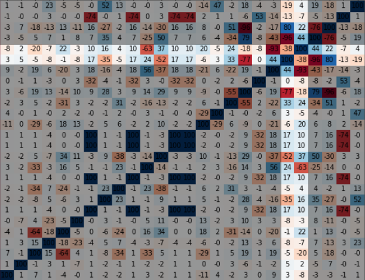
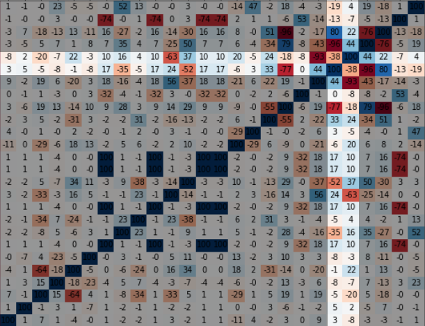
Selection Efficiency


Non-uniform selection efficiency creates artificial signals!
Adversarial Networks
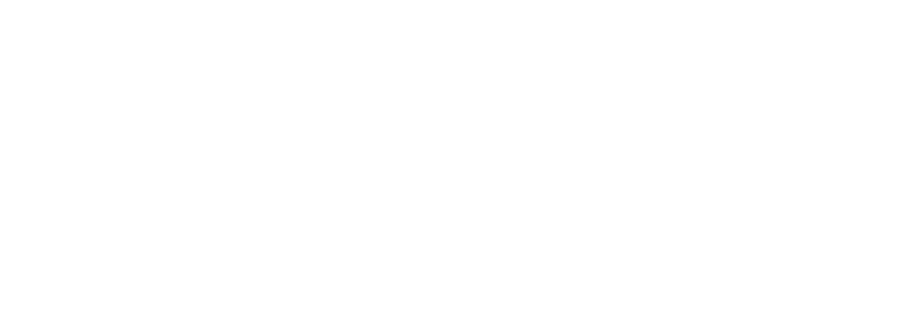
G. Louppe, M. Kagan, K. Crammer

Adversarial Networks
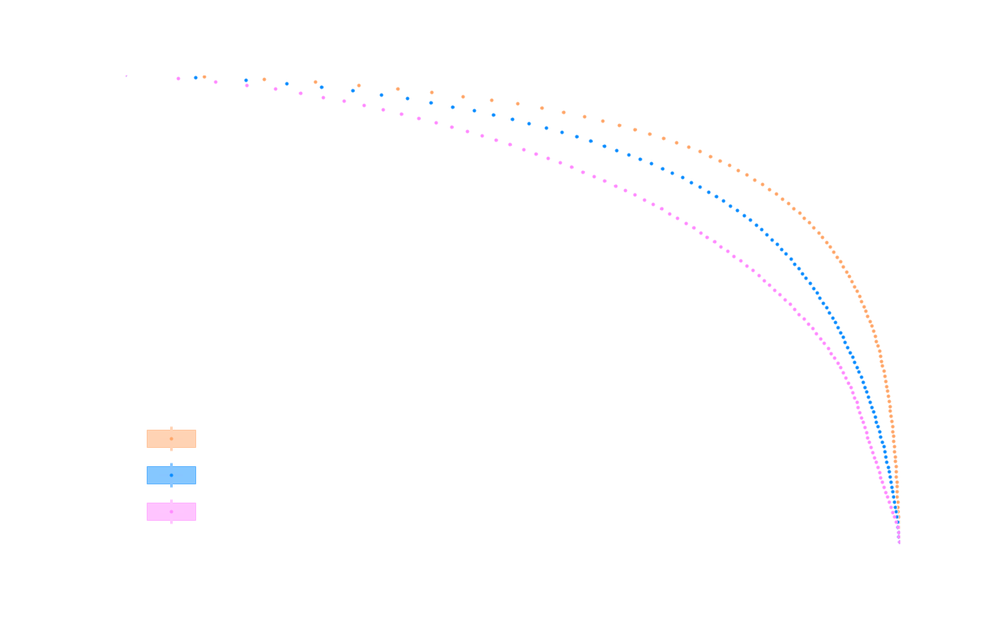
References
- PhD Thesis Thomas Keck
- Master Thesis Jochen Gemmler
- An automated framework for hierarchical reconstruction of B mesons at the Belle II experiment (C. Pulvermacher, T. Keck et al.)
- FastBDT: A Speed-Optimized Multivariate Classification Algorithm for the Belle II Experiment (T. Keck)
- Advanced event reweighting using multivariate analysis (D. Martschei et al.)
- Learning to Pivot (G. Louppe et al.)
- Practical Bayesian Optimization of Machine Learning Algorithms (J. Snoek et al.)
FastBDT
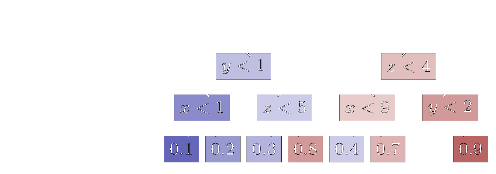
Efficient caching (spatial, temporal)
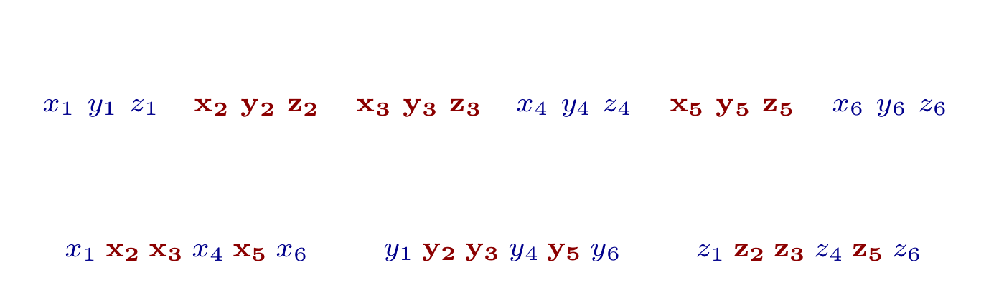
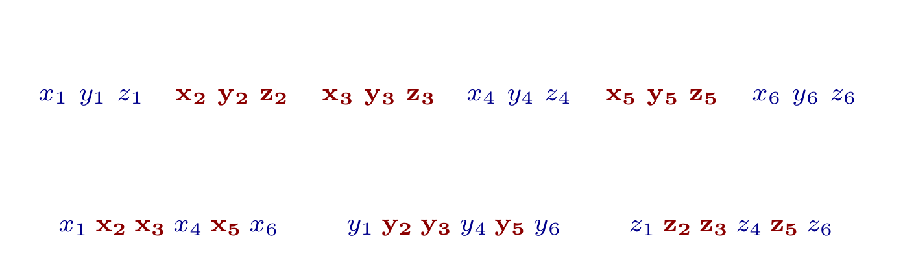
Equal-frequency binning
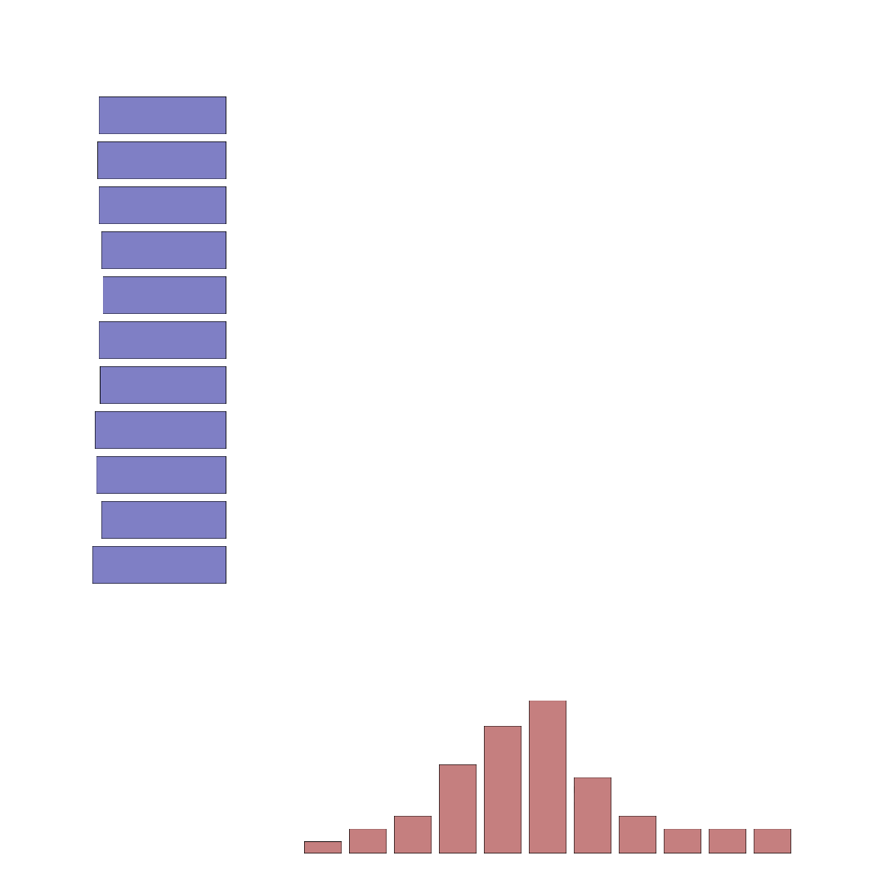
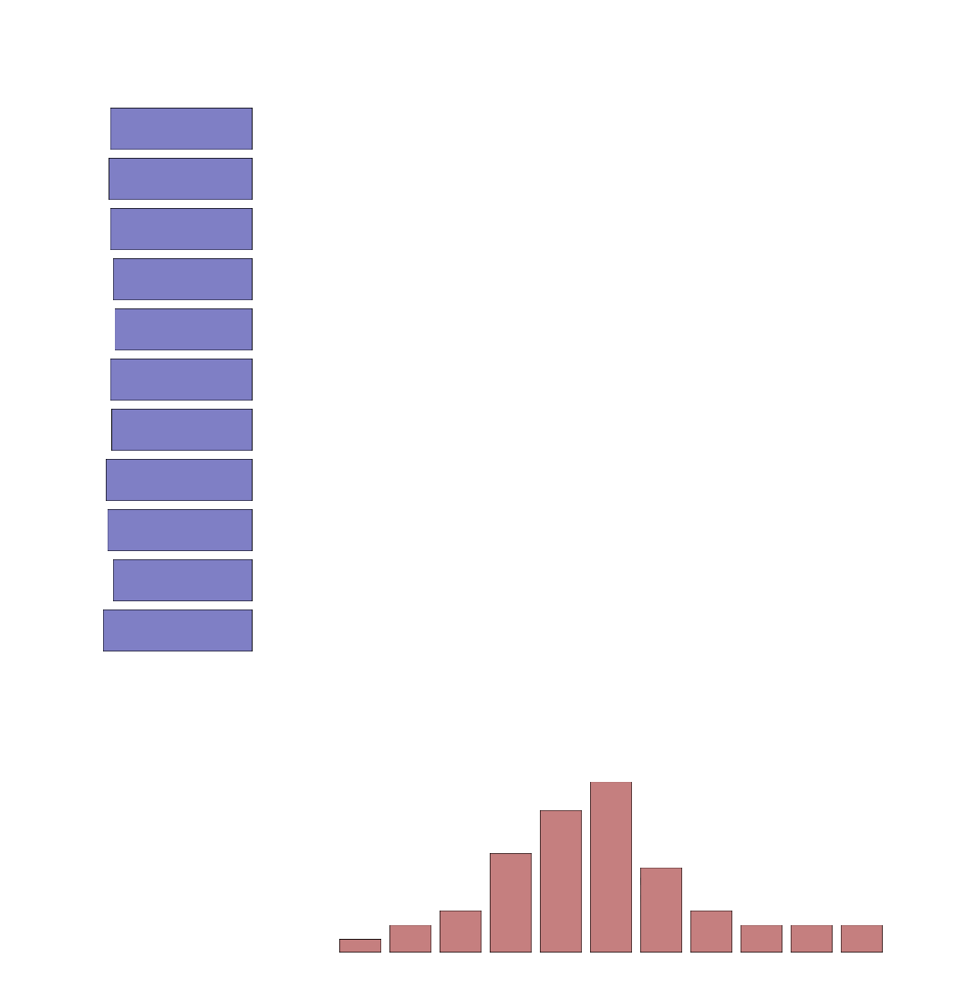
Runtime: FastFit
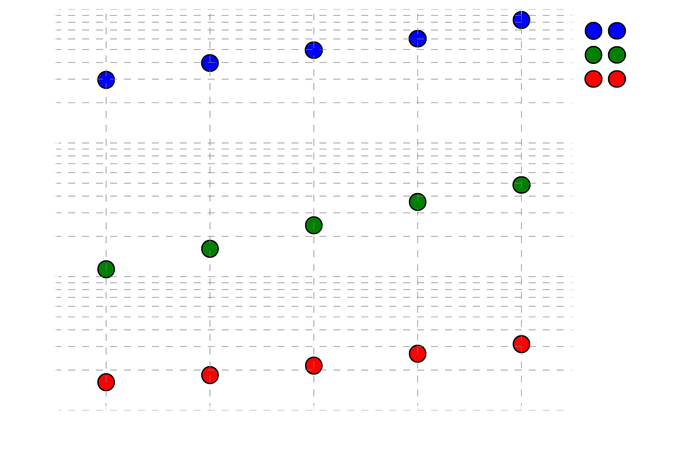
Simple vertex fitter based on Eigen is one order of magnitude faster
Neuro Z Trigger

- Virtex 6 vhx380 FPGA on Custom Board
- Identifies tracks originating in the interaction region
- 280 nano-seconds per decision